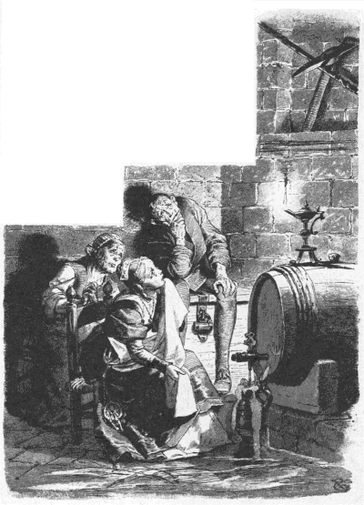

あるところに、ひとりの男がおりました。男には、ひとりのむすめがありました。このむすめは〈りこうもののエルゼ〉という名まえでした。
さて、このむすめがすっかり大きくなりましたので、おとうさんはおかあさんにいいました。
「もうむすめをよめにやろうじゃないか。」
すると、おかあさんはこたえました。
「ええ、およめにもらいたいっていう人がきましたらね。」
やがて、遠くのほうから、ハンスという人がやってきて、エルゼをおよめさんにもらいたいといいました。ただ、このひとは、りこうもののエルゼがみんなのいうとおり、ほんとうにりこうならもらうけれど、ということでした。
「いや、それなら、このむすめはまったくりこうですよ。」
と、おとうさんがいいました。
おかあさんはおかあさんで、
「まあ、この子は風が通りをふきすぎるのが見えたり、ハエがせきをするのもきこえるんですからね。」
と、もうしました。
「そうですか。」
と、ハンスがいいました。
「エルゼさんがほんとうにりこうでなけりゃ、わたしはもらいませんよ。」
みんなは
「エルゼや、
そこで、りこうもののエルゼは
それから、エルゼはビール入れをじぶんのまえにおいて、せんをひねりました。ビールが入れもののなかにながれこんでいるあいだも、エルゼは目をあそばせておくようなことはしませんでした。
これを見ますと、りこうもののエルゼは
「あたしがハンスさんのおよめになって、やがて子どもが生まれて、その子が大きくなる。そして、あたしたちはその子をこの
と、いいました。
エルゼはそこにすわりこんで、やがておこるふしあわせのことを思って、せいいっぱいの声をはりあげて
上にいる人たちは、
「地下室へいって、エルゼはどこにいるのか見てきておくれ。」
女中はおりていきました。と、どうでしょう。エルゼはたるのまえにすわりこんで、大声をあげて泣いているではありませんか。
「エルゼさん、どうして泣いていらっしゃるんですか。」
と、女中はたずねました。
「ああ、これが泣かずにいられて。」
と、エルゼがこたえていいました。
「あたしがハンスさんのおよめになるわね。そのうちに子どもが生まれて、大きくなる。そしてその子を、
それをきいて、
「まあ、うちのエルゼさんは、なんてりこうなんでしょう。」
と、いいながら、じぶんもエルゼのとなりにこしをおろして、そのふしあわせをかなしんで
しばらくたちましたが、女中はもどってきませんでした。上にいる人たちは、
「
下男がおりていってみますと、りこうもののエルゼと女中がならんですわって、ふたりいっしょに泣いています。それを見て、下男は、
「あなたがたは、いったいなにを泣いているんですか。」
と、たずねました。
「ああ、これが泣かずにいられて。あたしがハンスさんのおよめになるわね。そのうちに子どもが生まれて、大きくなる。そしてその子をここへ飲みものをつがせによこす。そうすると、あの十字のとび口が頭の上におちてきて、子どもを殺してしまうわ。」
と、エルゼがいいました。
それをきいて、
「うちのエルゼさんは、なんてりこうなんだろう。」
と、いいながら、じぶんもエルゼのそばにこしをおろして、声をはりあげておいおい

上ではみんなが下男を
「
と、いいました。
おくさんがおりていってみますと、どうでしょう、三人そろって
それをききますと、おかあさんもおなじように、
「まあ、うちのエルゼは、なんてりこうなんだろうねえ。」
と、いって、そこへすわりこんで、みんなといっしょに
上にいる
「これじゃ、わしがじぶんで
と、いいました。
主人は地下室へおりていきました。すると、みんながそこらにずらりとならんで、泣いているではありませんか。主人がわけをきいてみますと、エルゼはいつか子どもを生むかもしれない、その子がビールをつぎにきて、ちょうどここにいるとき、上にある十字のとび口がおちてでもくれば、
「エルゼは、なんてりこうなんだろう。」
と、大きな声でいって、じぶんもそこにこしをおろして、いっしょに泣きだしました。
おむこさんは、長いこと上でひとりで
（みんな、下でわたしを待っているんだろう。わたしも下へいって、みんながなにをしているか見てこなくちゃなるまい。）
おむこさんが下へおりてみますと、五人ともすわりこんで、
「いったい、どんな
と、おむこさんがたずねました。
「ああ、ハンスさん。」
と、エルゼはいいました。
「あたしたちが
「わかりました。」
と、ハンスがいいました。
「そのくらい頭がよければ、わたしのうちのことにはじゅうぶんです。あなたはほんとうにりこうだから、わたしがおよめさんにもらいます。」
こういうと、ハンスはエルゼの手をとって、上につれていって、
ふたりがいっしょにくらすようになって、しばらくたってからのことでした。ハンスがエルゼにむかって、
「おまえ、おれはそとではたらいて、
「ええ、あなた、あたしそうしますよ。」
ハンスがでかけたあとで、エルゼはおいしいおかゆをこしらえて、それを畑へもっていきました。畑のはずれまできますと、エルゼはひとりごとをいいました。
「なにをしよう。さきに
こうして、エルゼはふかいおなべにはいっているおかゆを、すっかり食べてしまいました。さて、おなかがいっぱいになりますと、エルゼはまたまたいいました。
「なにをしよう。さきに
こうして、エルゼは麦畑のなかにねころんで、ねてしまいました。
いっぽう、ハンスはとっくにうちにかえってきたのですが、エルゼはいつまでたってももどってきません。そこでハンスは、
「うちのエルゼは、なんてりこうなんだろう。おまけに、はたらきもので、うちへかえってきて、ごはんを食べようともしない。」
と、いいました。
しかし、エルゼはいつまでたってもそとにいます。そのうちに、日がくれてきました。そこでハンスは、畑へいって、エルゼがどのくらい
これを見ますと、ハンスはおおいそぎでうちにひきかえして、小さな
こうしておいて、ハンスはうちにとんでかえり、入り口の戸に
あたりがまっくらになってから、ようやく、りこうもののエルゼは目をさましました。おきあがりますと、からだのまわりがかちかちして、おまけに、ひと足歩くたびに、たくさんの
「あたしは、りこうもののエルゼなのかしら、それとも、そうじゃないのかしら。」
と、思わずいってみました。
しかし、じぶんではそれになんとへんじをしたらいいのかわかりません。それで、しばらくまよっていましたが、とうとう、こう考えました。
（うちへいって、あたしがりこうもののエルゼかどうか、きいてみよう。うちのものなら知っているにちがいないわ。）
エルゼはじぶんのうちの戸口にかけていきました。ところが、戸には
「ハンスさん、エルゼはうちにいるの。」
と、大声できいてみました。
「うん、うちにいるよ。」
と、ハンスはこたえました。
それをきいて、エルゼはびっくりぎょうてんして、
「あらまあ、それじゃ、あたしはりこうもののエルゼじゃないんだわ。」
と、いって、ほかのうちの戸口にいきました。
けれども、だれもかれも、カランカランという
こんなわけで、エルゼはこの村からかけだしていきました。それきり、エルゼのすがたを見かけたものはひとりもありませんでした。